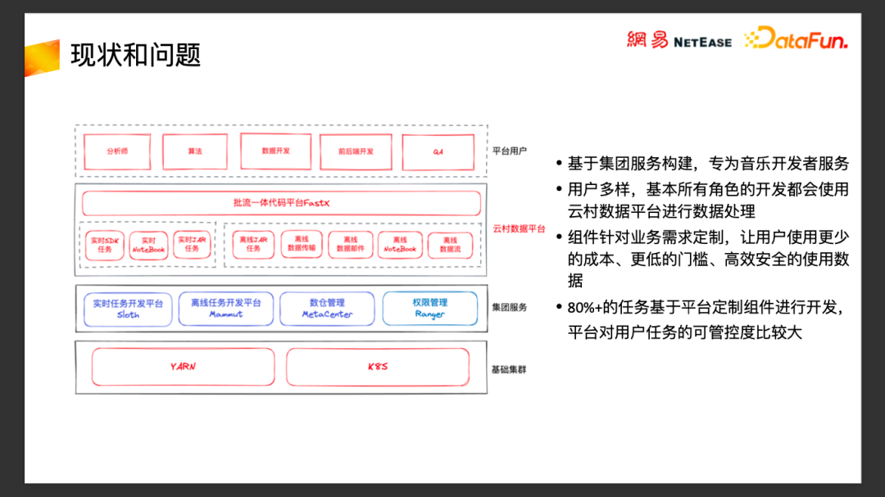

网易云音乐实时数仓治理优化实践
转自公众号：DataFunTalk
http://mp.weixin.qq.com/s?__biz=MzU1NTMyOTI4Mw==&mid=2247667665&idx=1&sn=fddbd7587b9b85bbbc9b29334f0de33f

导读 今天分享的主题是实时数仓治理的优化实践。
全文目录：
现状问题
治理实践
技术优化
未来规划
Q&A
01
现状和问题
1. 现状和问题
云音乐数仓平台已经上线使用超过6年时间，目前累计用户（包括离职人员）超过700人，每日UV超过200，涉及数仓开发、数据产品、分析师、算法、业务开发、QA等几乎所有角色的开发人员。覆盖了音乐所有的业务线，一些典型的业务类型包括索引构建、特征开发、内容监控，以及报表、线上统计等。云音乐业务发展到今天，所有部门的业务都离不开大数据处理。所有的开发多多少少都会接触到大数据处理。目前平台上实时任务有1600+ ，离线任务有 7000 到 8000 之间，80% 以上的任务都是 SQL 任务。目前整个云音乐的集群规模，纯计算节点大概有2000+ 台机器，每天原始日志量超过千亿级别。
2. 平台思路
平台的建设思路是希望成为连接技术和业务的桥梁，整合技术和业务，通过平台让数据被更高效地用起来。我们的定位是云音乐这个垂直业务的数据平台团队，需求方更多是音乐内部的需求，并不是通用的集团需求，因此与集团平台或者通用云服务上数据平台相比，我们更贴近业务，工具也更业务化。不同于普适的数据开发平台更倾向于开放通用能力，不会根据业务的流程规范做定制，我们需要根据内部的规范和需求定制化平台能力，需要深入到业务当中去，了解业务的需求和开发的痛点，提供整套的解决方案，同时我们也更关心业务方的成本，希望整体的使用更加经济，替业务省钱。
3. 整体的架构

我们整体的能力构建于集群服务之上，集团服务提供了通用的数据处理和治理的能能力，比如实时任务开发平台sloth，基于Flink，提供了通用的实时数据处理能力，支持SQL处理实时数据；离线开发平台猛犸提供了通用的离线任务提交、调度以及管控的能力，支持MR、SparkSQL、Jar、HiveSQL等多种任务类型；元数据中心提供了通用的数仓元数据管理能力，血缘追踪能力；安全中心，基于Ranger提供了通用的权限管理的基础能力。在集团提供的完善的基础能力之上，我们根据云音乐内部的规范以及需求做了封装和定制，把业务规范做到平台上、整合最佳实践，让用户以更低的门槛和成本，以更高的效率和质量在平台上完成业务需求数据处理工作。
目前平台 80% 以上的任务都是平台上定制组件来完成的，对于平台的任务，我们可以更好地了解任务的业务需求和特点，同时对用户任务的管控度也会比较大，可以更加方便地在用户无感知的情况下批量地进行优化，实现开发质量的提升，这对于后面的治理工作是一大助力。当然这也是一把双刃剑，更多的实现和干预，也会带来更大的运维压力，对于团队人员的开发质量和能力也是一大挑战，需要更加全面地考虑组件的各种应用场景。
4. 为什么要做这个治理
我们进行治理是基于以下一些原因。
第一：去年是降本提效的大年，各大公司都在降本提效，会有外部的压力推动资源优化治理。
第二：现状水位高，超大的业务流量导致平台 Kafka 水位居高不下，长期处于80%上，很多问题比较明显，突然的一波流量波峰就有可能导致Kafka抖动，对下游的任务产生影响。
第三：音乐新的平台内部上线新的埋点体系，新的埋点体系补充了很多业务信息，解决了很多统计问题；上报信息的增多带来了三倍的流量增长，导致Kafka集群以及下游所有Flink任务的压力非常大，对平台任务的稳定性会产生非常大的影响。
第四: 云音乐业务发展到今天，正如前面所说，已经到了一个人人用数据的状态，几乎所有角色的开发都会接触到数据开发工作，平台大部分用户是非专业数据开发，这对平台的稳定性、易用性以及运维工作都是一个非常大的挑战。去年平台上60% ~ 70% 的工单问题，都是最基础的性能、概念问题，还有使用的配置问题，基本上都是通过文档，或者简单的培训学习能够掌握的问题。
02
治理规划
治理规划主要分为四大块：
第一：摸清现状
要做哪些事情，现在情况是怎样的，做到治理有的放矢，快速高效地拿到结果。
第二：运动式治理
存量历史任务多，初期我们需要一些人肉的动作来运动式地推动治理动作，快速拿到数据结果，降低整体水位。
第三：技术优化
在运动式治理的过程中，我们也做了技术优化，来优化任务的资源使用，提升任务的稳定性，降低整体计算集群资源的水位、以及Kafka集群的水位。
最后：可持续性
以上三部分事情做完以后，我们还需要考虑治理工作可持续发展，不是一锤子买卖，同时也不能一直靠堆人力运动式治理的方法来解决问题，我们希望能够把运动式治理的主动收益，转化成用户主动触发治理行为的被动收益。
1. 摸清现状
为了摸清现状，我们做了以下一些工作：
和集团底层团队合作，整合集团的资源监控服务Smildon ，实时获取集群所有任务的资源使用情况，统计所有任务使用的资源和成本，并将资源和成本直接换算成钱，通过前端实时的反馈给用户。从用户角度看，用户可以对任务的成本有最直接的感知，在使用资源时会更加谨慎，同时在平台推进用户治理时，用户也会更加配合。从平台角度看，可以获得一个整体的资源使用大盘，从资源使用多的任务开始治理，快速收敛资源水位。
同时我们还收集了任务并发和输入流量的关系，统计所有任务的单位并发的处理量，然后通过这个指标快速评估出平台整体的处理能力，通过这个值的大小，快速筛选发现出资源配置可能有问题的任务，高效地进行优化治理。
为了控制每个部门资源的增长，我们以部门为单位，整合从Smildon系统收集过来的实时资源使用数据，构建逻辑的虚拟队列，实时地统计每个部门大概用了多少资源，然后划定初始的限制，如果超过限制，就要走申请流程来扩容，通过这种流程上的手段来控制它的增长（图示是一个虚拟队列资源）。
2. 高效治理
有了上面说的数据指标就能快速把有问题的任务筛出来，然后根据所有任务的资源的使用量，以及单位并发的处理能力等指标做倒排，快速优化治理相关任务，收敛资源，拿到数据结果。任务的治理工作主要分以下几类：
（1）第一：无用任务探查下线
这个操作的关键在于如何判断任务是否还在使用，目前我们的判断依据主要有以下几点：
通过血缘判断，如果输出数据没有任务消费，则大概率任务是无用任务。获取血缘的手段主要有两种，对于SQL任务和使用我们SDK开发的实时任务，会通过静态SQL解析获取任务的血缘信息，比较准确。对于Jar任务，通过日志解析抽取关键信息来获取血缘，这种方式就不一定能抓取全。所以对于血缘收集，我们内部一直倡导的是约定大于技术优化，推进用户改造使用SQL或者我们的SDK进行开发，来获取血缘，而非适配用户的开发习惯，浪费人力使用很奇怪的方式去抽取血缘。 运维积极性，如果任务长期无人运维管理，报警不处理，可以找用户确认是否还在使用。 根据业务周期判断，如果业务已经下线，比如日常活动已经下线，则可以推进相关任务下线。
（2）第二：任务本身的资源不合理
通过前面提到的任务的单个并发处理数据量的指标，快速筛选出资源配置不合理可能性比较大的任务，调整并发优化资源，由于我们平台用户大部分都不是数据开发的背景，这种Case还是非常多的。
（3）第三：流量萎缩导致任务资源配置冗余过剩，还有很多任务历史流量很大，但是后来流量逐步降低，但是任务资源没有相应的调整，也导致了整体资源的配置不合理，这个后续可以通过数据来记录任务历史处理能力，来判断整体资源的合理性。
（4）第四：技术优化
为了优化整体的资源使用，我们还做了很多技术优化，比如Flink SQL的增强，添加一些额外的能力优化整体性能, Kafka写入的优化，通过写入的batch优化降低整体Kafka的水位，设计开发分区流表技术，优化流量使用，减少无用的消息消费，降低整体带宽和整体计算资源，这些后面会做详细介绍。
3. 可持续性
可持续发展指的是让治理工作变成常态化，目前这一部分功能还在开发中。我们希望把前文中提到的规则落到治理平台，通过自动化的流程去推进用户，自动扫描出有问题的任务，推进通知用户，让用户主动地做开发治理，让每个人都参与到治理工作中来平台方从运动式治理的主动收益，变成自动化的被动收益。
03
技术优化
接下来将分三部分来介绍技术上的优化：Flink SQL优化、Kafka 的batch优化，以及我们设计开发的“分区流表”的优化。
1. Flink SQL 优化
Flink SQL的发布，大大降低了实时计算的开发门槛，提升了开发效率，但是它也带来了一些问题，SQL背后逻辑的不透明，让用户能够控制的东西也变少了，这导致了一些不必要的计算逻辑，同时用户能做的优化手段也变少了，这导致了中间有很多的资源浪费。下面我们通过一些Case来说明。
（1）Case 1 : 消息反序列化前置优化
背景：日志消息格式为userid\001os\001action\001logtime\001props。Props 是 JSON格式，所以在读取流表的过程中大部分性能损耗都在JSON 的解析上。离线的场景下我们可以做列裁剪，只读需要的数据，但是在实时情况下，还没有那么成熟，不管我们需要不需要props这个字段，FlinkSQL本身都会对整条消息做解析，这导致了很多的资源浪费。
为了解决这个问题，我在反序列化上做了一些优化，用户可以通过一些配置在解析完整日志前做一些过滤，比如上图中的这两条SQL的对比，在解析整条消息之前，通过keyword配置做关键字过滤，将不包含‘user-fm’关键字的消息全部过滤掉，在解析props之前，通过os.list和action.list过滤掉多余的消息，通过这些配置可以减少大量无用消息的解析，大大提升整体任务的性能，降低CPU的消耗。这些优化在很多情况下效果非常明显，极端情况下能减少50% 以上的性能损耗。
与离线场景下的列裁剪类似，按需解析，按需反序列化，这个优化还可以持续优化，现在还需要用户手动去配置，我们最终的目标是根据用户的 Select 字段结合format的实现做自动的列裁剪优化。
（2）Case 2 :索引构建场景
第二个case是索引构建场景。很多索引是通过关联多张数据库表，生成大宽表，写入到索引引擎里面的，然后提供给前端用户去查询。大致流程为，用户通过Flink订阅数据库的binlog日志来监听业务库的数据变化，然后把binlog里面关键数据和很多业务DB表进行关联，生成一个大宽表，最后再通过Flink写入到索引构建引擎里面，供用户查询。这里存在几个问题：
第一：Flink SQL读 Kafka受到Kafka 分区的限制，比如10个分区只能通过10个并发去读取和消费；
第二：当维表关联特别多的时候，因为上游的分区有限，下游维表关联受到维表查询性能的限制，表越多单条消息的处理性能越差。
两者结合就导致整体的处理性能无法做到水平扩展，无论怎样扩大Flink任务并发，始终也都只有10个并发在处理消息，导致任务的延迟非常严重。
我们的优化方案是：
第一：完善 Metrics 监控，把所有的维表关联的 Metrics，比如每张维表查询的RT，消息反序列化的性能、以及写入三方存储的RT 相关监控指标全部收集上来，写入到任务的监控里面去，在Granafa上展示出来，这样如果哪张维表因为索引设计不当，导致维表关联的性能特别差，就可以通过 Granafa的监控页面快速发现，并进行优化。
第二：针对维表越多性能越差的问题，添加异步关联配置，开启 Flink AyncIO的特性，通过异步关联的方式提升任务整体的处理能力。
第三：关于处理能力受Kafka分区限制的问题：Flink在读取Kafka消息时会自动做OperationChain的优化，会把读取动作、解析动作、维外关联写入动作全部绑定在一起，导致这一系列动作都会受到Kafka 的并发限制，整个处理能力非常糟糕。特别是在维表关联特别多的时候，即使开启异步优化，整体性能的提升也不是特别明显，这个时候需要一个能力把行为拆开，分别设置并发。所以在Flink SQL 里面加了一个配置，在读取表消息的过程中添加一个修改并发的操作，把读取消息行为和后续的解析处理消息的行为拆开。通过在中间加一个rescale或者rebalance的操作，分别设置读取和后续解析处理的并发。在没有按照消息内容shard的需求时，我们推荐 rescale，因为 rescale 的性能损耗比较小。这样后续维表关联的功能就可以不受Kafka分区数量的限制，可以通过调整后续处理的并发，做到处理能力水平扩展，当然中间添加rescale或者rebalance操作会导致消息乱序，在对消息顺序有要求的场景上时，这个优化不能使用。
最后，这种类型的任务都是IO密集型任务，输入流量往往都不是很大，加并发只是为了增加DB维表查询的并发，提升任务整体的吞吐。所以在优化这种类型时，我们还会优化CPU的配置，通过yarn.containers.vcors的配置，做细粒度CPU资源分配。默认情况下一个slot分配一个CPU，通过这个配置可以控制比例，比如4个Slot， yarn.containers.vcors 配置为2的话，一个Slot 就只分配到0.5个CPU,同时也能带来资源的节省。
2. Kafka 的Batch 优化
前面已经提到，我们的Kafka集群一直处于水位比较高的状态，高峰期水位达到80%，加上业务即将上线新的埋点体系，会带来三倍的流量增长。为了降低整体Kafka集群水位，我们做了以下工作：
第一 完善Kafka监控
早期我们这边Kafka的运维体系比较简陋，监控指标不够完善，导致我们的优化工作难以下手，为了更好地了解Kafka水位高的原因，我们参考了 Kafka 社区的方案搭建了非常完善的监控，获得了比较完善的数据监控，给我们的优化提供了方向，我们通过监控的数据发现了下面提到的问题。
第二 流量均衡的问题
一个Kakfa集群服务很多业务，每个业务有很多消息队列topic，每个topic又有很多partition分区，这些分区分布在集群的机器上，分区和机器的关系都是手动维护的，消息分区的分布不均，每个分区消息的流量大小也不相同，这直接导致了有些机器的负载比较高，有些机器的负载低。这块目前的优化方案比较简单粗暴，通过监控直观地看到每台机器的流量情况，然后PE通过工具手动调整topic的partition分布情况，保障每台机器流量均衡稳定。这个问题也是Kafka开源版本普遍存在的问题。未来会考虑把Kafka 替换成 Pulsar，通过存算分离的架构优势来解决这个问题。
第三 消息发送的优化
通过监控发现，以前的Kafka的水位高大部分是因为处理线程池不够以及磁盘的 IO比较大，但是整体消息量还好。深挖后发现，消息发送的batch
size配置没有生效，很多时候一次发送只有一到两条消息，这样100条消息就要发送100次请求，这会导致Kafka消息处理的线程水位非常高，磁盘IO的操作频次也是一样。但是为什么batch size的配置没有生效？调研发现Kafka batch 与batch size 大小的配置、 以及liner.ms最大容忍延迟时间这两个配置有关，liner.ms的默认配置为0，但是当我们优化了这个配置以后，batch效果还是不明显，最后我们发现还与producer
partitioner的策略有关系。
Partitioner优化策略考虑以下几点：
分区均衡，要保障消息均匀地发送到所有partition当中，不然会导致数据倾斜问题，对机器以及下游消费者都会带来压力。
单个消息体不能太大，不然消息的延迟会增加，下游处理单条消息时压力也会变大。
最大容忍时间：当消息体在最大容忍时间还没有积累到配置的最大size时，也会触发发送请求。
在三者之间要做 trade Off，太大的话会影响延迟，太小的话整个 IO 也会不行。Kafka在2.4版本里引入了新的 Partition策略：Sticky Partitioner ，在公共的Partitioner接口中添加了一个新的 onNewBatch 方法，每次创建新的 Batch的时候会调这个方法，在这个方法调用时， Sticky Partitioner 会随机选择一个分区，然后将所有的消息都会放到一个Cache 当中，在下一次OnNewBatch 的时候会把Cache中所有消息打包成一个batch发送到随机选择的那个分区当中，下一次再随机选一个分区，继续积累消息到Cache中然后打包发送，这种策略既保证了分区的均衡性又保证了Batch效果的最大化。经过实践测试，通过Sticky Partitioner的Batch策略带来的性能优化非常明显，整个Kafka集群的水位从80%降低到了30%。
3. 分区流表优化
（1）数仓的处理流程
在离线场景下，我们可以通过列存储、分桶、分区、索引等诸多手段来减少不必要的数据读取，从而提升程序的性能。为了降低整体实时集群的使用成本，扛住新埋点三倍的流量冲击，我们参考了 Hive 的分区设计，实现了一套实时分区流表的设计。
上图是一个比较常规的实时数仓的处理流程图，正常的日志处理流程包括 DS 归档（网易内部服务，收集日志到Kafka和HDFS），然后通过Flink清洗格式化到ODS层，再到DWD层，业务应用程序消费DWD，生产出ADS层给上层应用提供服务。整个流程中，ODS 的日志量非常大，在开发DWD的时候，需要消费全量的ODS层的日志，如果ODS层日志流量大小是700M/S，那么下游所有的DWD的任务都要消费这700M/S的流量，要处理这么大的流量，大概要900Core资源，相当于9台最新配置的物理服务器，每多一个DWD表任务，就需要增加9台物理服务器。另外在这么大流量的情况下，任务的稳定性无法保障，任何一波日志的波动，都会对下游任务产生比较大的影响，Kafka的压力也会非常大，成本也无法接受。
（2）历史方案
我们以前的方案是在源头上对原始日志做拆分，通过单独分发程序，按业务需求将原始日志拆分成不同的Topic，业内一些公司也是也是这么做的，但是这种做法有如下问题：
① 运维成本高，拆分粒度相对较粗，下游还是有一定程度的流量的无用消费，后期拆分也比较困难。
② 用户在使用实时流表的时候需要很多的先验知识，需要了解消息的分发规则读取正确的流表，使用成本高。
③ 实时数仓的建模和离线不能统一，后期如果想做批流一体，实时数仓和离线数仓没法做到Schema的一致，继而也没法做到一套代码同时支持实时和离线。
④ 无法迁移复用，在源头单独做一个定制的分发程序，下游消费的分发后数据有可能存在流量大的问题，下游用户没法轻松的复用这套方案，不能够持续产生价值。
（3）分区流表优化
我们参考Hive表的分区设计，重新设计了实时流表的元数据结果，让实时流表也有分区的概念，分区元信息中包含分区和Kafka topic的映射关系，然后我们定制修改了Kafka Connector，根据流表的分区元信息，写入流表时根据消息中分区字段的内容和分区的元信息将消息写入到不同的topic当中。读取流表时，我们在Kafka Connector的基础上实现了分区下推，会根据用户查询SQL中分区条件，自动推断出需要的分区topic，裁剪掉不需要的分区topic，减少不必要的消息读取，减少资源浪费。
有了分区流表以后，我们就可以把DS归档过来的日志，下游所有的DWD任务都能够在无感知的情况下享受到分区流表带来的流量优化的红利，用户不需要关注太多，定好分区规则，使用SQL 读写，不需要构建单独的程序做分发，复用的成本非常低，下游的大流量的 DWD 层表的建设也可以以很低的成本复用分区流表技术，做到整体流量的减少。
示例中，只需要定义好写分区字段，会根据分区字段自动写到相应的 topic 里，读取这个分区字段的查询条件，会自动推断出 topic 来源。
04
未来规划
未来规划，主要是两块：大数据容器化改造和自动化治理平台。
1. 容器化改造
我们希望通过容器化改造获得以下几方面的能力：
第一：优秀的资源隔离能力，通过K8S的容器化CGroup比较好的资源隔离能力，解决Yarn环境下任务之间相互影响的问题，虽然Yarn上也可以开启CGroup，但是配置起来非常不灵活，运维起来比较困难。
第二：精细化资源配置
在Yarn环境下，我们只能通过yarn.containers.vcores做一些资源精细化的资源调整，但是整体粒度较粗，在K8S上可以做到1/1000Core粒度，资源配置更加精细化，更加灵活。
第三：宏观监控体系
在Yarn环境下，因为没有很好的资源隔离性，本身也缺乏container级别的资源利用率的详细指标，导致我们很难从机器负载、CPU利用率、内存利用，带宽使用等宏观指标来评估任务资源使用的合理性；在K8S环境下，拥有比较好的资源隔离性，以及完善资源指标，我们搭建任务级别的宏观监控体系，参考一般web应用程序，通过CPU 利用率、 IO 利用率、内存利用率等宏观监控快速评估出Flink应用的资源申请的合理性，快速治理优化。
第四：灵活的资源调度能力
K8S本身可以定制非常灵活的调度策略，方便我们根据任务特点选择不同类型的机器；还可以和其它类型业务（如机器学习、在线业务、离线计算等）的资源混合部署，达到整体资源利用率的最大化。
2. 自动化治理平台
正如前面提到的，我们希望通过收集数仓、任务、用户平台要素的元数据，构建元数据仓库，在元数据仓库的基础之上，使用这些元数据进行规则配置。在开发上线前，通过规则进行一些合法性的校验，如SQL是否规范、报警是否完备等前置检查；服务中通过规则定期扫描，自动发现问题，如资源是否合理、是否可以下线等，自动化地推进用户进行治理；任务治理以后回收治理效果，通过晒治理结果形成红黑榜，形成一个良性的闭环。
05
Q&A
Q1：有基于分区流表做一些流批一体的工作吗？
A：我们现在的方案都是通过构建一层数据模型层，数据模型层会关联离线数仓表和实时数仓表，在离线场景读取离线表，实时场景读取实时流表。前面提到的分区流表的技术解决了实时数仓表单表流量过大的问题，做到了离线数仓和实时数仓建模的统一，所以在数据模型这一层就很容易做到了统一的映射。
文中提到了一个 FastX 的开发工具，是一个基于数据模型的低代码的开发工作，可以在FastX管理数据模型，然后在数据模型的基础上通过低代码的方式做配置化的开发。通过低代码的方式生成一套统一的计算逻辑，实现一套逻辑配置，在流批两套环境下运行。
Q2：怎么屏蔽SQL的不同
A：FastX会通过低代码配置化的方式生产一套统一的DSL，在实时场景下会选择实时数仓的数据源，然后将DSL生成实时的FlinkSQL，离线情况下选择离线数据源生成Spark SQL进行执行。上层交互是有限的，整体的算子也是可控的，所以我们逐步覆盖业务场景，实现一套逻辑，同时跑在离线和实时环境上。目前FastX定位是一个基于业务场景的开发平台，做全场景的肯定很难，我们希望根据二八原则，能够覆盖80%的业务场景。
Q3：实时数仓治理跟离线数仓治理在方法论上有哪些异同点？
A：方法论上感觉是差不多的，但是实时数仓与离线数仓相比，发展时间还比较短。离线数仓治理上有很多数据指标来评价数仓的质量，比如穿透率、复用率、闲置滤等来评价数据资产的好坏，会朝着这些量化的目标来做数据仓库结构上的优化。在实时场景下，数仓的结构还比较简单，层次比较少，一般不会在实时场景下建 DWS 层，顶多是 ODS 层到DWD 层，然后再到业务层，构建 DWS 层成本也非常高，存储也很难选。本身实时场景的Flink任务对资源以及稳定性、延迟等都比较敏感，必要的时候，数仓建设的规范需要给资源性能让步，所以在实时数仓的治理上我们更关注稳定性、资源的治理。